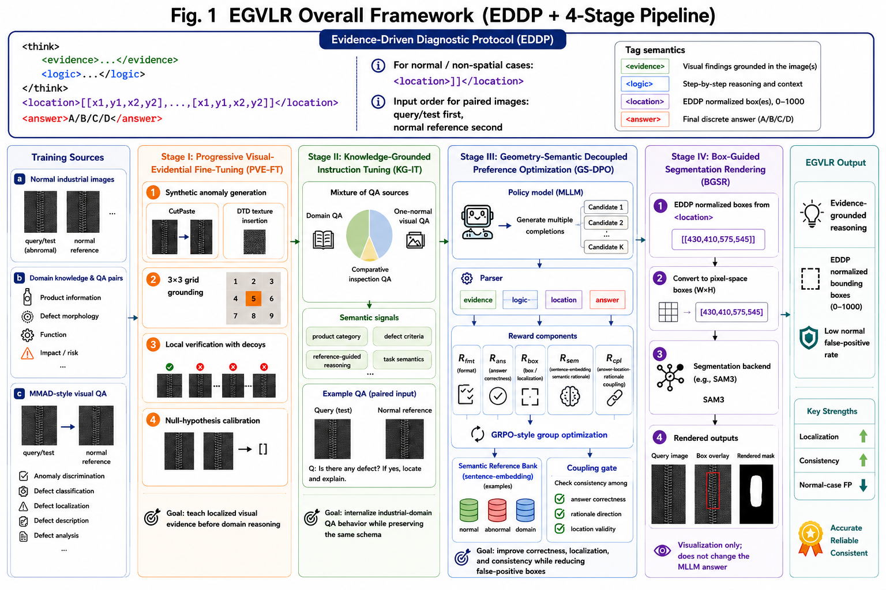
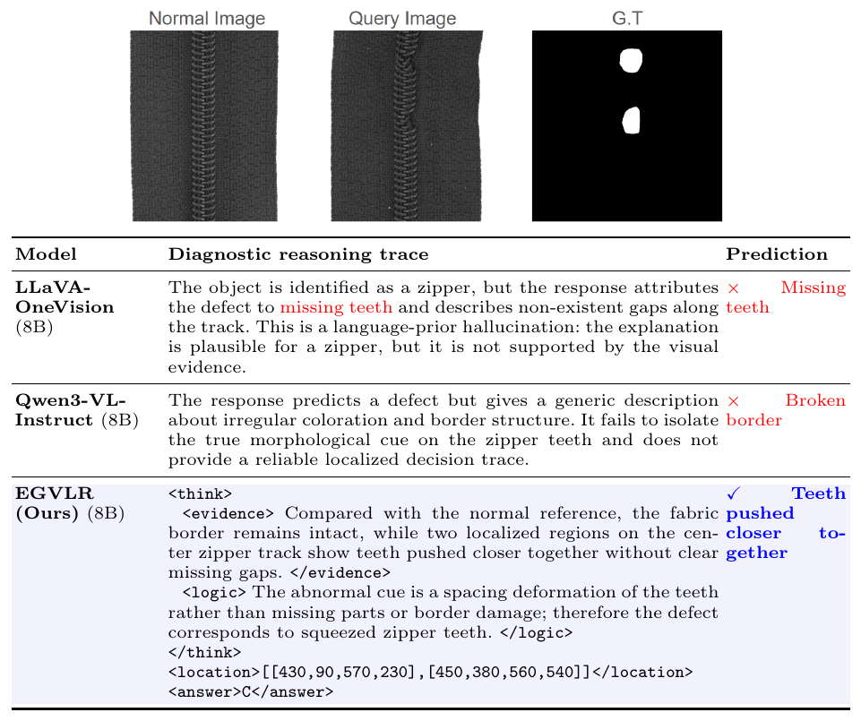

Abstract
Multimodal large language models have recently shown promise for industrial anomaly understanding, where a model is expected not only to decide whether an object is defective, but also to localize the supporting visual evidence and explain its decision. However, existing models often rely on language priors or shortcut reasoning when facing fine-grained industrial defects. This leads to inconsistent behaviors, such as correct answers with invalid locations, hallucinated defect boxes on normal samples, or rationales that contradict the final prediction.
We propose EGVLR, an evidence-grounded vision–language reinforcement framework for industrial anomaly reasoning. EGVLR enforces a unified diagnostic response format that explicitly separates visual evidence, diagnostic logic, spatial location, and the final answer. The framework progressively teaches the model to attend to localized defect evidence, incorporate industrial-domain reasoning, and optimize answer–location–rationale consistency through geometry- and semantics-aware preference optimization. For visualization, predicted boxes can be further converted into dense masks using an off-the-shelf segmentation backend. Experiments on MMAD show that EGVLR improves evidence-grounded anomaly reasoning, with consistent gains in defect localization, reasoning-dependent question answering, and spatial false-positive control. These results suggest that explicitly coupling answers, locations, and rationales is important for reliable industrial anomaly understanding.
Method Overview
PVE-FT
Progressive Visual-Evidential Fine-Tuning trains visual evidence grounding with synthetic localized anomalies (CutPaste-style patch replacement or DTD texture insertion), 3 × 3 grid supervision, local verification decoys, and null-hypothesis calibration — before any domain knowledge is introduced.
KG-IT
Knowledge-Grounded Instruction Tuning teaches industrial-domain QA behavior using domain questions, one-normal visual QA, and comparative inspection QA while preserving the EDDP schema.
GS-DPO
Geometry-Semantic Decoupled Preference Optimization refines the KG-IT model with a GRPO-style objective and separately rewards format validity, answer correctness, box geometry, sentence-embedding-based rationale semantics, and answer–location–rationale coupling.
BGSR
Box-Guided Segmentation Rendering maps predicted boxes to dense masks using an external segmentation backend; it is a rendering step and does not change the MLLM answer.
Evidence-Driven Diagnostic Protocol
EGVLR uses a unified EDDP schema across trainable stages, explicitly separating evidence, reasoning logic, location, and answer.
<think> <evidence>...</evidence> <logic>...</logic> </think> <location>[[x1,y1,x2,y2], ...]</location> <answer>A/B/C/D</answer>
Each box is represented as [x1, y1, x2, y2] in the [0, 1000] coordinate system. For normal, negative-region, or non-spatial QA samples, the correct location is the empty list.
Main MMAD Results
| Model | Scale | Anomaly Discrim. | Defect Class. | Defect Local. | Defect Desc. | Defect Analysis | Object Class. | Object Analysis | Average |
|---|---|---|---|---|---|---|---|---|---|
| GPT-4o | - | 68.63 | 65.80 | 55.62 | 73.21 | 83.41 | 94.98 | 82.80 | 74.92 |
| Gemini 2.5 Pro | - | 83.07 | 73.86 | 67.20 | 79.97 | 86.27 | 94.88 | 83.08 | 81.19 |
| Qwen2.5-VL-Instruct | 7B | 71.39 | 54.35 | 61.17 | 65.81 | 79.32 | 91.44 | 84.43 | 72.56 |
| LLaVA-OneVision-1.5 | 8B | 60.85 | 56.29 | 55.25 | 74.73 | 83.21 | 91.03 | 89.14 | 72.93 |
| Qwen3-VL-Instruct (Base) | 8B | 69.75 | 59.34 | 59.08 | 73.54 | 81.29 | 90.30 | 89.07 | 74.62 |
| AnomalyR1 | 7B | 60.93 | 64.81 | 70.72 | 79.06 | 85.52 | 93.12 | 86.91 | 77.29 |
| OmniAD | 7B | 68.80 | 78.80 | 75.50 | 67.20 | 86.40 | 96.00 | 86.40 | 79.90 |
| JUDO | 7B | 64.51 | 72.17 | 75.95 | 84.38 | 87.76 | 94.24 | 86.07 | 80.73 |
| EGVLR (Ours) | 8B | 66.66 | 74.57 | 75.99 | 84.98 | 88.37 | 90.74 | 88.16 | 81.35 |
Seven-task accuracy following the MMAD evaluation protocol; results from methods with different inference mechanisms should be interpreted with protocol differences in mind.
Stage Ablation
| Variant | Avg. Acc. | Loc. Acc. | Format | FPRimg ↓ | FPBox ↓ |
|---|---|---|---|---|---|
| Base MLLM | 74.62 | 59.08 | 58.7 | 42.6 | 0.98 |
| + PVE-FT | 77.84 | 71.90 | 94.6 | 29.4 | 0.67 |
| + PVE-FT + KG-IT | 80.63 | 73.42 | 97.9 | 21.8 | 0.50 |
| + PVE-FT + KG-IT + GS-DPO | 81.35 | 75.99 | 99.6 | 7.9 | 0.18 |
Reward Ablation (GS-DPO)
| Variant | Avg. Acc. | Loc. Acc. | Format | FPRimg ↓ | FPBox ↓ |
|---|---|---|---|---|---|
| Answer-only GRPO (Rans) | 80.12 | 72.84 | 95.4 | 18.6 | 0.36 |
| Standard GRPO (Rfmt+Rans+Rbox) | 80.74 | 75.12 | 98.8 | 12.8 | 0.25 |
| w/o box reward | 80.41 | 71.66 | 98.9 | 16.9 | 0.33 |
| w/o semantic rationale reward | 80.88 | 74.83 | 99.2 | 10.3 | 0.22 |
| w/o semantic coupling reward | 81.02 | 75.42 | 99.3 | 13.7 | 0.27 |
| Full GS-DPO | 81.35 | 75.99 | 99.6 | 7.9 | 0.18 |
All variants use the Qwen3-VL-8B backbone and the same KG-IT initialization.
Qualitative Example

Qualitative comparison on a zipper anomaly example. The visual pair contains a normal reference and a query image whose teeth are pushed closer together. Baselines produce plausible but weakly grounded defect descriptions, whereas EGVLR follows the unified EDDP schema, localizes the multi-instance defect with EDDP normalized 0–1000 boxes, and predicts the correct answer.
Code Release
The official training and evaluation code is released at github.com/leolin65/EGVLR-project under the MIT License. It covers the full Stage I–III training pipeline, data-conversion scripts, and reproducible MMAD evaluation.
data_pipeline/ Stage I/II/III data conversion (synthetic + real anomaly QA,
domain-knowledge QA, comparative QA, dataset merging)
src/ Reward decomposition, GRPO trainer, SFT/GRPO training entrypoints
scripts/ SLURM job templates for Stage I/II/III training, LoRA merging, eval
eval/ lmms-eval task definitions for MMAD (mmad, mmad_1shot, mmad_info,
mmad_train) + macro-7 scoring matching the original MMAD metric
paper_fidelity/ Documented paper-vs-code gaps with tested (unapplied) fixes
The code builds on Qwen-VL-Series-Finetune and evaluates with lmms-eval. MMAD's underlying image datasets (MVTec-AD, MVTec-LOCO, VisA, GoodsAD, DS-MVTec, RealIAD, etc.) are not redistributed; obtain them from the original providers and the MMAD benchmark release.
Acknowledgements
This work was supported in part by the National Science and Technology Council, Taiwan, under grant NSTC 115-2634-F-007-003.
BibTeX
@inproceedings{lin2026egvlr,
title = {EGVLR: Evidence-Grounded Vision--Language Reinforcement for Anomaly Reasoning},
author = {Lin, Shih-Chih and Lu, Ying-Heng and Ye, Dong You and Lai, Shang-Hong},
booktitle = {Computer Vision -- ECCV 2026},
series = {Lecture Notes in Computer Science},
volume = {17061},
publisher = {Springer},
year = {2026},
doi = {10.1007/978-3-032-37094-5_11}
}
Published in Computer Vision – ECCV 2026, LNCS vol. 17061, Springer.